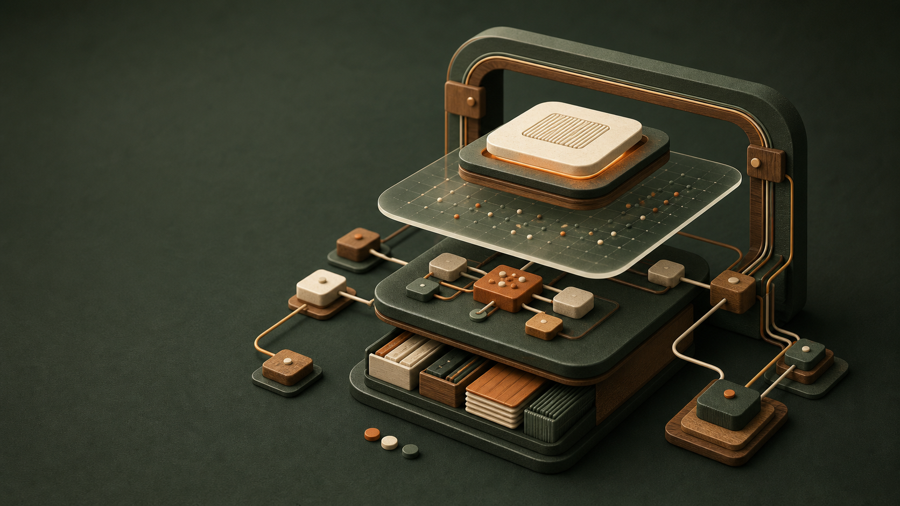
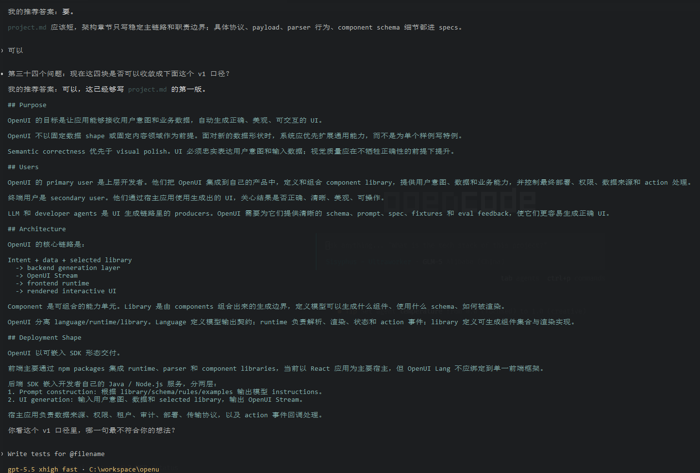
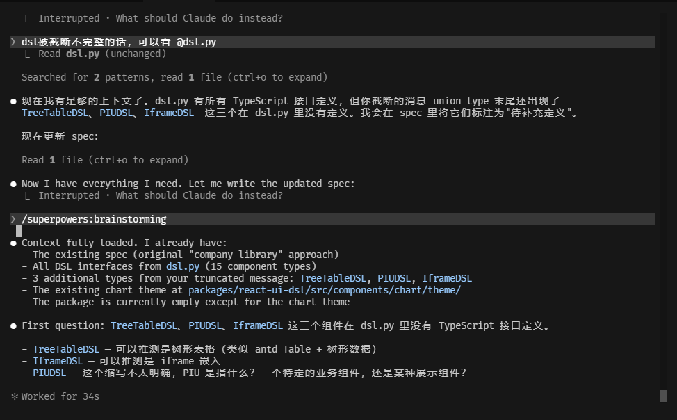
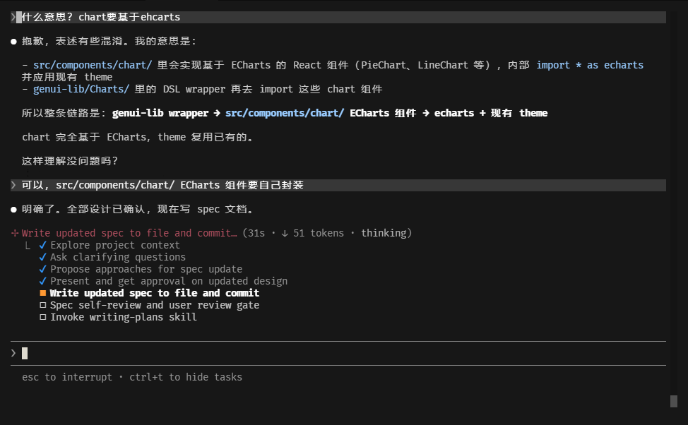
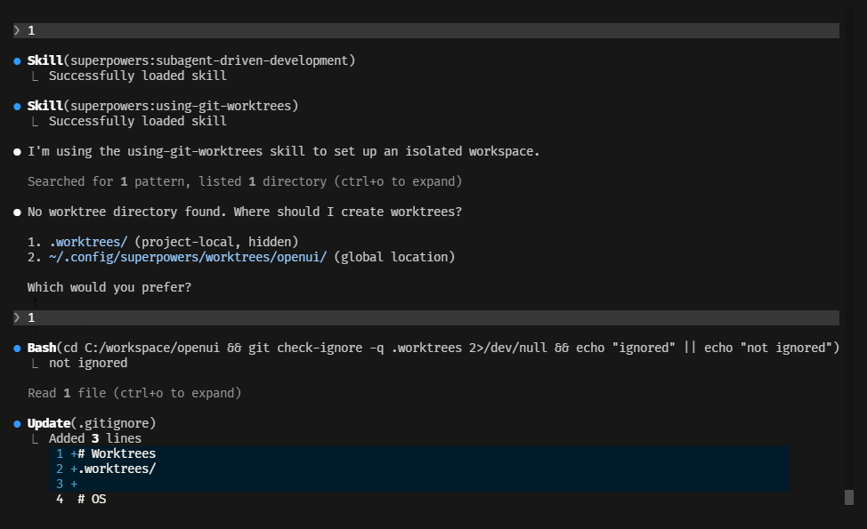
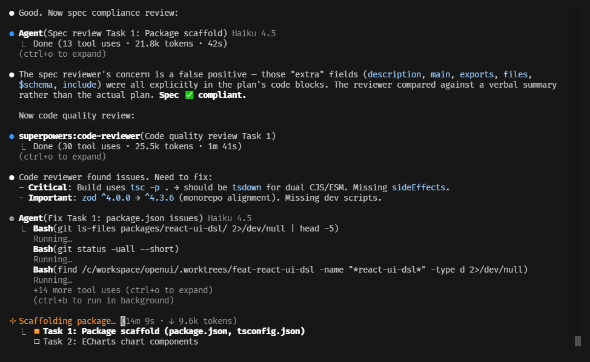
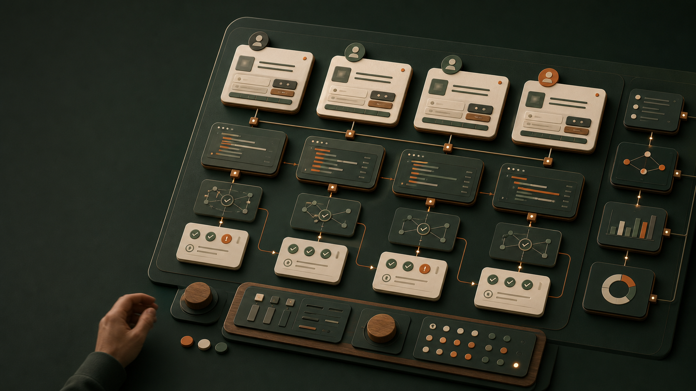

Harness
Engineering
突破单智能体天花板：用流程、隔离、反馈和门禁，把会自己跑的模型变成可靠的软件工程劳动力。
突破单智能体天花板：用流程、隔离、反馈和门禁，把会自己跑的模型变成可靠的软件工程劳动力。

更常见的问题是认知架构不稳：上下文越滚越脏，同一个智能体又天然不擅长审查自己。
第 50 轮工具调用，可能已经和第 5 轮架构决策冲突。
先写代码，再评价自己的代码，天然容易给出正面判断。
模型很笨但听话，工程师雕一条“完美提示词”。
模型会用工具，工程师决定“给它看什么”。
模型可以自己跑，工程师搭安全、反馈和门禁。
容量大、可持久化，但智能体需要知道去哪里找。
访问最快，但最贵、最短命、最容易被污染。
上下文工程的核心不是喂更多信息，而是设计取数机制。
历史被总结、裁剪以后，细节会丢，早期约束可能只剩一句摘要。
主智能体保留目标、计划和验收标准；子智能体只拿一个边界清楚的小任务，完成后返回摘要、diff 和证据。
大语言模型，生成与推理核心
上下文，快速但有限
文件系统，持久化项目知识
工具：读写、浏览器、MCP
驾驭工程：权限、流程、反馈、门禁
明确任务切片、输入、成功标准。
小步推进，不一次吞下整个项目。
测试、截图、评审器、另一个智能体。
状态外置于文件系统，Agent 只负责一次性推进
一句话定义 让 AI 编码 Agent 在 shell 死循环里反复执行同一个 prompt；每轮都用全新上下文，状态完全落在代码库、TODO 文件、git history 上。
(prompt, 磁盘状态) → 新的磁盘状态
核心飞轮：犯错 → 人类归因 → 补驾驭工程 → 下次同类问题更少。
一个会话想做完所有事。
看到部分进展就说完成。
写完代码，没有端到端验证。
每次新会话重复摸索。
OpenAI Codex 团队规模
小团队做大规模工程：他们没有靠人海盯 agent，而是把任务拆分、权限控制、测试和审查做成默认流程。
自动生成代码行数
百万行不是一次生成：每次只让 agent 处理一个清晰切片，跑工具、留证据、过门禁，持续累积产出。
同模型更换驾驭工程后的跃迁
LangChain 做对照实验：模型不换，只把任务拆解、执行环境和评估回路换成 harness，成功率从个位数跃升。
Manus 重写驾驭工程
半年多次重构：他们反复改 agent 的工作台、记忆、工具调用和反馈链路，收益大于单纯更换模型。
project.md / CLAUDE.md / MCP 工具配置是入口底座，不在循环里；它负责让新会话快速进入现场。
反向盘问 / 提问澄清
OpenSpec / 纵向切片
TDD / 子智能体 / 工作树
测试 / 评审器 / 截图
PR 机器人 / 架构债扫描
规则 / 规格 / 技能 / 评审器回流
`openspec/project.md` 像给新同事做概要设计入职介绍：系统为什么存在、主要用户是谁、关键 workflow 是什么、哪些边界不能乱动。
这个系统解决什么问题，成功是什么样。
哪些模块稳定，哪些地方不能越界。
用户如何进入系统，哪些路径最重要。
常用命令、测试命令、日志和排障入口。

好的对齐流程会把模糊讨论沉淀成 spec（规格），而不是让对话本身成为唯一记忆。

提案写清楚为什么做、做什么、不做什么；设计写取舍；任务清单写可验证的小步任务。
边界、成功标准、非目标
按任务清单小步实现
合并进长期规格库
计划本身也需要审查门禁：范围、文件边界、测试映射、风险和回滚点。


验证不只给数字分数，也给 Playwright 截图和自包含任务包。
LLM 重新生成 DSL 快照
Playwright 渲染并截图
LLM-as-Judge（大模型评审器）四维打分
输出总结、截图、适配器提示词
智能体修源码，验证重跑，报告变化量
评审器指出组件匹配和格式质量最低，智能体读任务包 + 看截图后修源码，再用验证命令量化回归。
作者/审查者模式比单智能体自查可靠。合入前再配 PR 机器人和定期架构债扫描。

复盘不是写总结，而是把失败沉淀进下一次启动时智能体会自动读到、自动遵守、自动验证的地方。
项目背景、架构边界
长期能力规格
重复工作流
评审器 / 钩子：必须发生的验证
成熟的驾驭工程会把项目看板、隔离工作区、验证证据和 PR 代码审查连成控制平面。人类从逐步驾驶，上移到审查证据和加固基础设施。
Symphony 是 OpenAI 开源的 Codex 编排项目：把议题、隔离工作区、自动实现、验证证据和 PR 串成面向多智能体执行的控制平面。
github.com/openai/symphony

真正稀缺的不再是多写几句提示词，而是定义任务边界、设计反馈回路、控制权限和风险、把失败沉淀成基础设施。
工程师的重心会上移：建设让智能体可以可靠工作的基础设施。